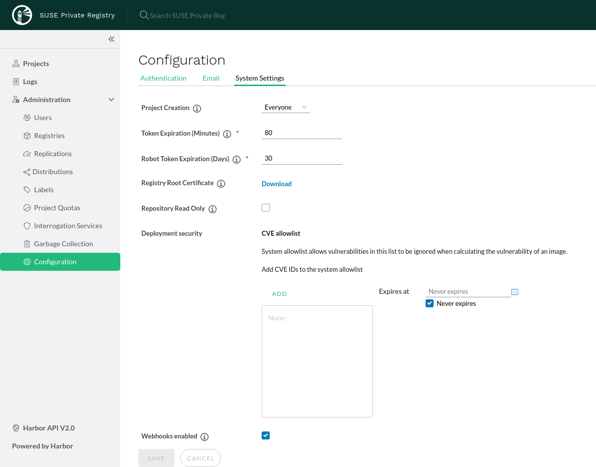

This is a draft document that was built and uploaded automatically. It may document beta software and be incomplete or even incorrect. Use this document at your own risk.
With default setup, the SUSE Private Registry public APIs (the UI and the OCI registry API) will both use an auto-generated certificate. To avoid root certificate validation errors, the generated CA certificate should be installed on all hosts that will need to connect to it:
All cluster nodes, if a Kubernetes cluster will be used to pull images from the SUSE Private Registry
All machines where supported OCI clients, such as docker engine and helm v3 are running, if those clients will be used to interact with the SUSE Private Registry
The generated CA certificate is available for download in the SUSE Private Registry UI, under the Configuration / System Settings section:
|  |
Install the extracted CA certificate system-wide:
su cp harbor.ca /usr/share/pki/trust/anchors/ update-ca-certificates